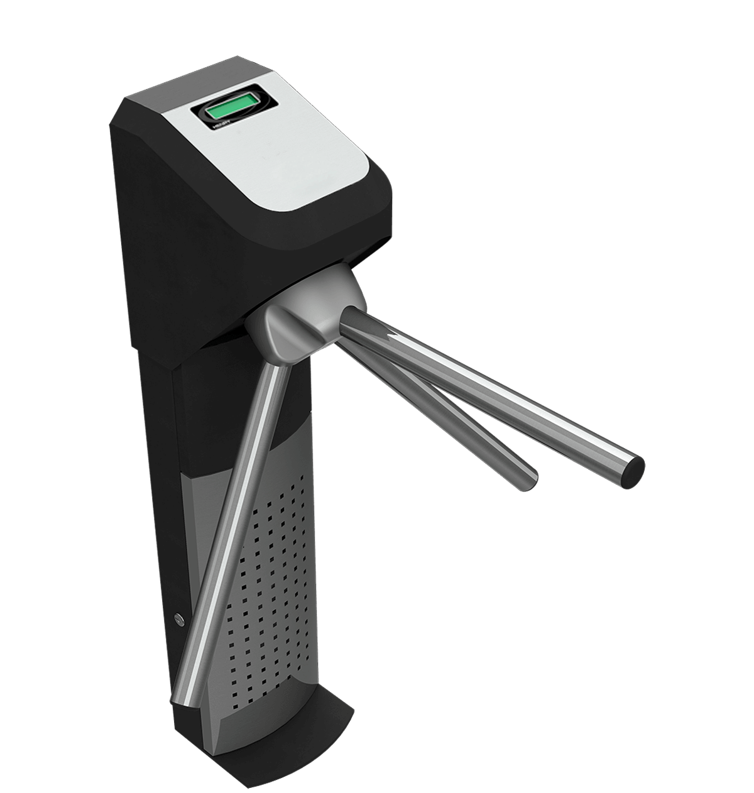
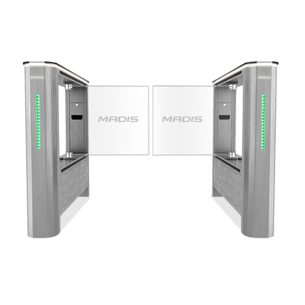
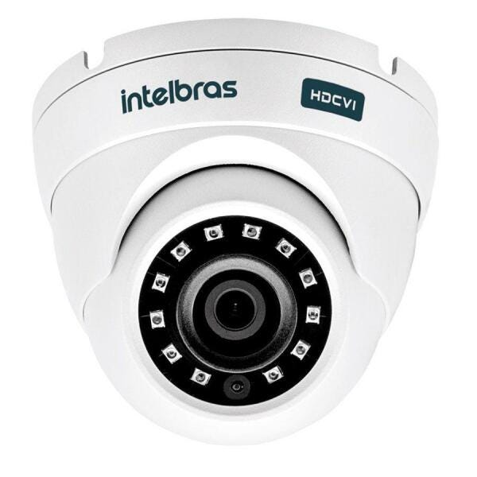
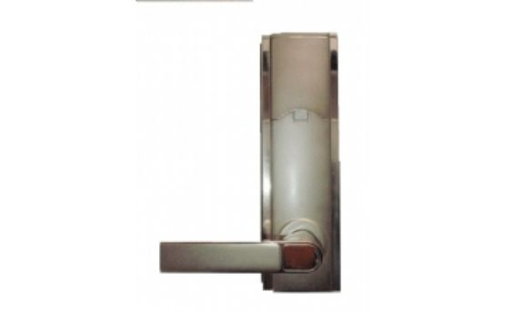
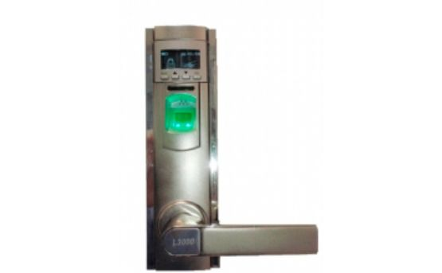

Bootstrap Example
Novos Produtos

Catraca Semi Eletrônica Controle de Acesso Henry

Controle de Acesso Catraca MDG 7703 Gate

Câmera Cftv Vigilância Residencial Digital Hd
FS-DLOCK 300
Fechadura que Identifica Impressões Digitais e também funciona com Cartões MF e Senhas individuais para cada usuário. Cadastra até 500 usuários. Possui capacidade de armazenar ate 30.000 Registros de acesso de usuários com data e hora. O FS-DLock 300 pode abrir portas com o toque da impressão digital de um usuário, sem o risco de ser roubado ou de cópias como acontece com cartões e chaves. Usuários também não precisa lembrar-se de senhas ou códigos. O FS-DLock 300 oferece segurança e conveniência simultaneamente.Captura e apaga a impressão digital direto na fechadura, sem a necessidade de estar conectada a um PC;
Pode trabalhar Stand-Alone e baixa de arquivos LOG de acesso através de RS 232;
Aceita impressões digitais e cartões MF e código de usuários + Senha individual;
Possue mecanismo de emergência para abrir a fechadura em caso de falha no equipamento. (Chave tradicional escondida);
Captura impressões digitais em menos de um segundo;
Resistente: fabricada em aço reforçado. Pode ser instalada em locais de acesso público;


FS 100
O FS 100 é o equipamento leitor adicional Biométrico para Controle de Acesso Duplo (Entrada e Saída) com uso de impressões digitais ligado a um único device MASTER (FS 9800 ou FS 9700). O FS 100 é a unidade escrava do conjunto que possibilita seu uso Externo ou Internamente ao controle de acesso físico. Todas as informações e transações de usuários serão enviadas para a unidade MASTER e lá armazenadas e gerenciadas. O Buzzer e o indicador de Led na unidade MASTER e no leitor escravo FS 100 fornecem a mesma resposta ao final do processo de verificação. O FS 100 possibilita a uso da função ANTI-PASS BACK trabalhando em conjunto com as unidades FS 9800 IP 2011 e FS 9700 IP. O FS 100 possibilita o Controle de Acesso biométrico Duplo (Entrada e Saída) sem que com isto o cliente necessite de 02 unidades MASTER e desta forma diminuindo substancialmente o custo da solução.
O FS 100 possui as seguintes tecnologias em uso :
Controle de Acesso Físico para acesso à ambientes restritos;
Unidades escrava para Controle Biométrico de Entrada e Saída por biometria (Interna e Externa) com baixo custo e função “Anti-Pass Back” – modelo FS-100;
Registra Entrada, Saída e Presença (Funcionários, Alunos, terceiros, etc.).